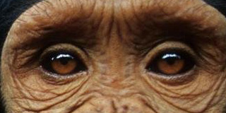
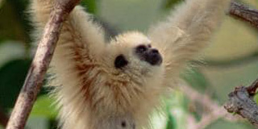

Here are the gorillas
Mountain Gorilla

The mountain gorilla (Gorilla beringei beringei) is one of the two subspecies of the eastern gorilla. There are two populations: One is found in the Virunga volcanic mountains of Central Africa, within three National Parks: Mgahinga, in south-west Uganda; Volcanoes, in north-west Rwanda; and Virunga, in the eastern Democratic Republic of Congo (DRC). The mountain gorilla is listed as endangered by the IUCN as of 2018.
Read MoreGorilla Tours Uganda

Book guided gorilla safaris and gameUganda leading travel operators viewing tours with Africa Adventure Safaris to Uganda, Rwanda and Congo tailored to leave a memorable impression. Join our gorilla tours deep into the jungles of Bwindi Forest, Volcanoes national park in Rwanda Virunga national prk in Congo and Mgahinga gorilla national parks the only gorilla destinations in the world.
Read MoreWhat's the point of saving endangered species?

In 1981, mountain gorillas were at rock-bottom. Confined to a small mountain range in central Africa, with humans encroaching on their habitat bringing poaching and civil war, their population was estimated at just 254. They would all have fitted into a single Boeing 747. Today things look a little better. A survey in 2012 reported that the population was up to 880. That is a big improvement, but it's still only two Boeing 747s of mountain gorillas. They remain critically endangered.
Read MoreMgahinga Gorilla National Park

The park is located about 15 km south of Kisoro, in the district of the same name, in Bufumbira county, and covers the Ugandan part of the Virunga mountain range. Covering an area of 33.7 km2, it is the newest and smallest Ugandan national park and one of only two, along with the Impenetrable Forest of Bwindi, to house mountain gorillas in the country. Contiguous to the Virunga National Park in the Democratic Republic of Congo and to the Volcanoes National Park in Rwanda, it forms with them a protected area of 434 km2 in total.
Read MoreWestern Lowland Gorilla

The western lowland gorilla (Gorilla gorilla gorilla) is one of two subspecies of the western gorilla (Gorilla gorilla) that lives in montane, primary and secondary forests and lowland swamps in central Africa in Angola, Cameroon, Central African Republic, Republic of the Congo, Democratic Republic of the Congo, Equatorial Guinea and Gabon. It is the nominate subspecies of the western gorilla, and the smallest of the four gorilla subspecies.
Read MoreWestern Gorilla

Western gorillas are generally lighter colored than eastern gorillas. Western lowland gorillas have black, dark grey or dark brown-grey fur with a brownish forehead. Measurements of wild individuals show that mature males average 1.55 metres (5 ft 1 in) in height, while mature females average 1.35 metres (4 ft 5 in). Weights of wild individuals have been rarely taken but captive western gorillas average 157 kg (346 lb) in males and 80 kg (176 lb) in females. The average weight of wild male western lowland gorillas is 146 kg.
Read MoreGorilla Fight

The clash between these two heavyweights of nature was immortalized by a visitor to the Paignton zoo in Devon, England. The two western lowland gorillas clashed in a real boxing fight, exchanging heavy blows before the former accepted his "condition." Western lowland gorillas are the most common gorilla species encountered in zoos, although they are listed by endangered species as, unfortunately, all gorillas.
Read MoreRuhija Gorilla Friends Resort

Ruhija Gorilla Friends Resort is Located near Bwindi impenetrable national park, Ruhija gate. The lodge is close to the park gate and guests are able to walk to the gorilla briefing point. Accommodationin exclusive tents, well furnished bandas and camping grounds. Handicrafts production and sale from local materials around Bwindi impenetrable forest national park. The scenery of the mountain gorilla forests from the room or restaurant balcony provide a memorable experience to take back home.
Read MoreCommon Chimpanzee

The chimpanzee (Pan troglodytes), also known as the common chimpanzee, robust chimpanzee, or simply "chimp", is a species of great ape native to the forests and savannahs of tropical Africa. It has four confirmed subspecies and a fifth proposed subspecies. The chimpanzee and the closely related bonobo (sometimes called the "pygmy chimpanzee") are classified in the genus Pan. Evidence from fossils and DNA sequencing shows that Pan is a sister taxon to the human lineage and is humans' closest living relative.
Read MoreBwindi Impenetrable National Park

The Bwindi Impenetrable National Park (BINP) is in southwestern Uganda. The park is part of the Bwindi Impenetrable Forest and is situated along the Democratic Republic of the Congo (DRC) border next to the Virunga National Park and on the edge of the Albertine Rift. Composed of 321 square kilometres (124 sq mi) of both montane and lowland forest, it is accessible only on foot. BINP is a United Nations Educational, Scientific and Cultural Organization-designated World Heritage Site.
Read MoreJack Ma “if you put banana…”
Jack Ma Quotes about business. "If you put bananas and money in front of monkeys, monkeys will choose bananas because monkeys do not know that money can buy a lot of bananas. In reality, if you offer a job and business to people, they would choose job because most people do not know that business can bring more money than wages. Profit is better than wages, for wages can make you a living but profits can bring you a fortune."
Read MoreBornean Orangutan

The Bornean orangutan (Pongo pygmaeus) is a species of orangutan native to the island of Borneo. Together with the Sumatran orangutan and Tapanuli orangutan, it belongs to the only genus of great apes native to Asia. Like the other great apes, orangutans are highly intelligent, displaying tool use and distinct cultural patterns in the wild. Orangutans share approximately 97% of their DNA with humans.
Read MoreIndonesia, the last orangutans

The Sumatran orangutans are a separate species. There are approximately 14,000 in the wild. At the pet black market, the baby orangutan is expensive. As her mother is very protective, she must be killed to take her child away from her. Males weigh almost 90 kg, making the orangutan the largest tree animal in the world.
Read MoreGibbon
Gibbons are apes in the family Hylobatidae. The family historically contained one genus, but now is split into four genera and 18 species. Gibbons live in tropical and subtropical rain forests from eastern Bangladesh and northeast India to southern China and Indonesia (including the islands of Sumatra, Borneo, and Java).
Read MoreSalzburg Zoo

Deforestation and conversion to agricultural land endangers many species which lose their habitat. Hunting, the wildlife trade, is also causing a massive and rapid decline in many populations, experts in their study of the effects of human activity on wild primates in Brazil, Madagascar, Indonesia and the Democratic Republic of Congo.
Read More